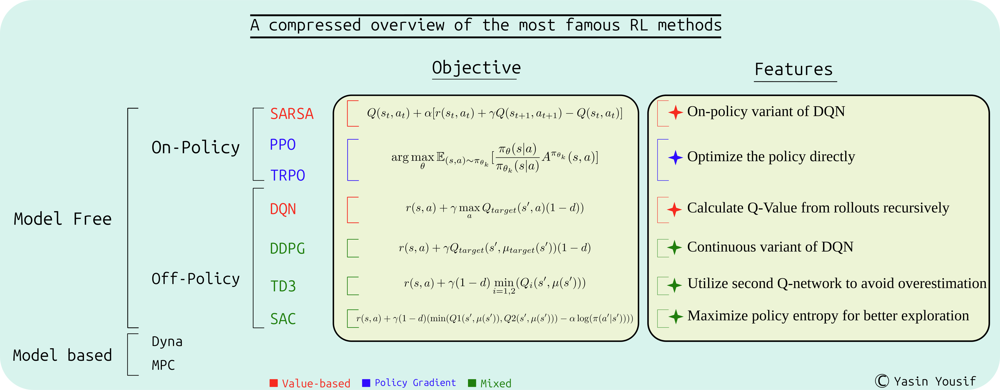

The Reinforcement Learning Algorithmic Landscape
NOTE: a book draft (Feedback is appreciated)
Reinforcement Learning is a learning methodology rapidly gaining traction as an efficient approach to skills acquisition by machines, attracting increasing interest across diverse fields. From optimizing advertising placement to enabling robotic manipulation as well as refining Large Language Models responses, its potential is predicted to be immense. The field encompasses a rich variety of algorithms, spanning model-based and model-free techniques, policy gradients, and Q-learning methods. This dynamic landscape can be daunting for newcomers, even those with a foundation in supervised learning. In this post we provide a comprehensive overview, offering both a high-level perspective as well as a detailed examination of the underlying mathematical derivations and algorithmic specifics. We’re also including full benchmarking results for all methods in both discrete and continuous environments, and lastly providing some unsolved exercises for the interested reader.

Table of Content:
-
Introduction
-
Essential Concepts
-
Taxonomy of Reinforcement Learning Methods
- Introduction
-
Value based Methods
- Deep Q-Network
- Deep Deterministic Policy Gradient
- Twin Delayed Deep Deterministic Policy Gradient
- Soft-Actor Critic
- State-Action-Reward-State-Action
- Distributional RL
- DQN Rainbow
-
Policy Gradient Methods
- Main Optimization Formula (REINFORCE)
- Vanilla Policy Gradient
- PPO and TRPO
- Phase Policy Gradient (PPG)
-
Other RL Areas
- Distributional RL
- Multi-agent RL
- Imitation Learning and Inverse Reinforcement Learning
- Meta Reinforcement Learning (Meta-RL)
- Hierarchical Reinforcement Learning (HRL)
- Reinforcement Learning From Human Feedback (RLHF)
-
Benchmarking the Methods
- DOORS Environment
- Walker Environment
- Further Questions
-
Conclusion
-
Recommended Readings
-
Other References
Introduction
Reinforcement Learning (RL) is a branch of Machine Learning, where the learning is done interactively within a model of the real environment, which can either learned or manually designed. This interactivity of learning the desired behavior (for example driving a car safely, or wining a chess game) necessities an exploration process of the different possible solutions in the solution space, which in turn will result in a more robust learning, where it can in principle outperform human behavior.
This learning is guided utilizing a scalar signal called the reward signal $r(s,a)$ which defines how much the taken action $a$ is desirable in the given input state $s$. Reinforcement Learning is a framework to learn a physical behavior of desirable characteristics related to the form of this behavior on the long or short run, and to wether it is continuous or discrete.
In short, RL is a trail-and-error learning methodology for the agents (the actor models under learning), which is based on the idea that punishing or rewarding an agent for it behavior increases the probability of avoiding or repeating this behavior in the near future respectively. For ads placement task this means encouraging polices that leads to more clicks, and for playing chess it means encouraging winning strategies.
Essential Concepts
Reinforcement Learning is widely used learning approach for Robots, Web agents, and acting entities in games, as in controlling a robotic arm to do specific tasks such as pick and place or to move a mobile robot in an environment fulfilling a request. The demonstrating examples that we will use here is based on two environments:
-
Doors: Grid World discrete environment, where the task is to move a red box within a grid of cells to reach specific known destination cell passing through possible gaps as shown in Figure 1.

Figure 1: Doors environment used in previous post.
-
Walker2d: one of the standard environments defined indm_controlsuite package, which a standard benchmarking 2D continuos environment and the task is to teach the two-legged agent to stand up and walk, as shown in Figure 2.
Figure 2: Walker environment from dm_control environments (controlled by random actions) and its specifications.
In order to understand the essential quantities in the Reinforcement Learning problem, we will utilize the two previous environments to demonstrate these quantities.
Markov Decision Process
To apply RL for a process it should fulfill Markov property defined as the system property that the current state $s$ in the current time step $t$ contains all the needed information in order to predict the needed action $a$, without dependence on previous states. When a process fulfill this criterion, then it can be called a Markov Decision Process (MDP), which defines the following quantities, also depicted in Figure 3:
-
State Space $S$: containing all the possible situations that the agent can encounter within the environment. This space can be continuous as in the
Walkerenvironment or discrete as in the Grid-World environment.It is worth mentioning that this state variable should be set only to the accessible values during deployment time, that's why a modified version of MDP is proposed (Partially Observable MDP) when some of the actual state values are not observed, thus defining the Observation space $\mathcal{O}$ (a partial space of the state space). For example the actual state for teaching a robot to navigate include a full map of the environment. However if the robot is only able to see up to a fixed range around itself then the state must be shortened by defining an observation variable of that part of tge map for learning the optimal solution.
-
Action Space $A$ , containing all action possibilities, which can be also continuous (for example defining applied forces to a robotic link) or discrete (defining the next cell in the Grid-World env).
It is common to utilize categorical distribution $a \sim X(N) \forall a \lt N, (N,a) \in (\mathbb{N}/{0,1})^2$ for a discrete action space where $N$ is the action space size. Or a gaussian distribution $a \sim \mathcal{N}(\mu,\Sigma)$ for continuous action space where $\mu$ is the mean and $\Sigma$ is the covariance matrix.
-
Reward Function $r(s,a,s')$: It is the function $r: S \times A \times S' \to \mathbb{R}$ giving a scalar value to encourage or discourage specific action in specific state.
For example if we want to make the robot walk, we can consider rewarding the height of the robot, along with the velocity forwards. Both of these quantities can be part of the state so in many times the reward is set to be a function of the state only $r(s_t)$. In the case of the Grid-World environment, the reward can be simply conditioned if the agent has reached the destination. However, another possibility in to directly reward the agent based on its distance from the destination. The exact difference and use cases for each of these sparse vs dense rewards is beyond the scope of this review, please refer to [6] if more details is needed.
-
Transition Probabilities $\mathcal{P}$: from state $s_t$ to state $s_{t+1}$ given an action $a_t$
-
Discount Factor $\gamma$: when calculating the return $R$, explained below. Its value is in the range $[0,1]$.
-
The policy function $\pi_\theta$: defining the desired behavior. This function can be deterministic, giving only one action for each specific input state $\pi_\theta: S \to A$, or stochastic giving a probability distribution over the action space $\pi_\theta: A \times S \to [0,1]$, so the next action $a_t$ can different each time a new random sample is taken from this distribution $a_t \sim \pi_\theta(s_t)$, where $\mathbb{\theta}$ is the policy set of parameters. In case of Deep RL model, $\mathbb{\theta}$ will be the neural network parameters.
-
Initial State $s_0$ Distribution $\rho$: where $s_0 \sim \mathbb{\rho}$
In addition to these quantities, additional notions are necessary to define in RL, as depicted in the figure below:
Figure 3: Different value functions and how they relate to each others. -
Agent: which is the main actor model performing the task. Its behavior is driven by the policy $\pi_\theta$. For example, the agent in a chess game is the player or in the robot moving around in a navigation task. It is worth noting that agent and policy can be used interchangeably sometimes, despite the slight difference in the meanings.
-
Environment: It represents the surrounding elements of the agent, and it evolves on its own according to an independent model. For example a chess board, or the surrounding of a robot including the gravity field. The environment model helps generating the reward signal for the model as well.
The environment can be deterministic so each action for the agent lead exactly to one known next state $s'$, like moving in the Grid-World env. It can also be stochastic where each action can lead to different outputs in unknown ways, like adding random noise to the robot actuator that can lead to slightly different outputs. In this last case, the transitions probabilities $\mathcal{P}$ defined earlier plays a crucial role.
-
Trajectory: $\tau={(s_0,a_0), \cdots, (s_{N-1},a_{N-1})}$ which is the ordered sequence of state-action steps taken by the agent policy $\pi_\theta$ over the timeline. It can be limited to $N$ timesteps or unlimited so $N \to +\infty$. Additionally the starting state $s_0$ is sample from independently defined distribution $\rho$ as mentioned above.
The trajectory can be denoted as rollout or episode in some context.
-
Return also known as the pay-off, and it is a crucial concept in training RL agents, because it defines the optimization objective that should be maximized for the task at hand. It is calculated for a trajectory $\tau$ as the sum of discounted rewards over the steps: $R_{\tau} = \sum_{t=0}^{N-1} \gamma^t r(s_t,a_t,s'_t)$, where $\gamma$ is the factor defined above.
-
The Optimization objective: In RL, we want to learn a policy model $\pi_\theta$ capable of having the biggest possible return for each of its trajectories. In other words we want to maximize the expected value of returns under the given policy parameters $\mathbb{\theta}$.
$$\text{arg}\max_{\theta} \mathbb{E}_{\tau \sim \pi_\theta,\ s_0 \sim \rho}[\sum_{t=0}^{N-1} \gamma^t r(s_t,a_t,s'_t)]$$
and if we define $J(\pi)$ as:
$$J(\pi) = \int_{\tau} P(\tau|\pi) R(\tau) = \mathbb{E}_{\tau \sim \pi_\theta,\ s_0 \sim \rho}[R_{\tau}]$$
Then we can say that th optimal policy is:
$$\pi^* = \text{arg}\max_{\pi} J(\pi)$$
-
Value Function $V(s_t)$: This function take the current state as input $s_t$ and calculate the expected value of the return value for the future trajectory as output when following the current policy. i.e.: $V^{\pi}(s_t) = \mathbb{E}_{\tau \sim \pi}[R(\tau)|s_0=s_t]$.
In that regard, this function can be seen as generalization for the expected Return $J(\pi)$, by starting from any needed state.
-
State-Action Value Function (Q Function) $Q^{\pi}(s_t,a_t)$: This function is also a generalization of the value function, by allowing the start from given state and action pair, then following the current policy afterwords:
$$Q^{\pi}(s_k,a_k) = \mathbb{E}_{\tau \sim \pi}[R(\tau)|s_0=s_k,a_0=a_k]$$
If we expand the $Q$ formulation using the discounted reward formual of the return, we get:
$$ Q^{\pi}(s_k,a_k) = \mathbb{E}_{\tau \sim \pi}[\sum_{t=0}^{N-1} \gamma^t r(s_t,a_t,s'_t)|s_0=s_k,a_0=a_k] $$
But we can remove the first reward value from the expected value bracket as its value is fixed when given the state and action:
$$ Q^{\pi}(s_k,a_k)= r(s_k,a_k,s_k') + \mathbb{E}_{\tau \sim \pi} \sum_{t=1}^{N-1} \gamma^t r(s_t,a_t,s'_t)|s_0=s_k] $$
We note here that the second term is equivalent to the value function, so we can say
$$ Q^{\pi}(s_k,a_k)= r(s_k,a_k,s_k')+ \gamma V^{\pi}(s_k') $$
This last equation is known as Bellman equation and it is crucial relationship in training Q-Learning methods like DQN.
It is worth noting that the optimal policy defined earlier $\pi^* = \text{arg} \max_{\pi} J(\pi) $ can be also formulated in terms of the Q-function as $\pi^*(s) = \argmax_{a} Q^*(s,a)$
-
Advantage Function $A(s,a)$: It is a function that relates to a specific action taken in a state, which shows how that action is beneficial compared to the rest of the possible actions in that state. It is directly related with the Value and Q functions as follows:
$$A^{\pi}(s_k,a_k) = Q^{\pi}(s_k,a_k) - V^{\pi}(s_k)$$
It is worth noting that a neutral action (exactly equal the expected value of all other actions) will get us advantage value of 0. A bad action will result in negative value, and good action will be positive in its advantage value. This normalized scale of values make the advantage function desirable function in Policy Gradient RL training methods, as it will lead to more stable training (than using the value or Q functions)
Taxonomy of Reinforcement Learning Methods
Introduction
Broadly speaking, we can say that Reinforcement Learning methods can be either Model-based or Model-free:
-
In model-based methods, a model of the environment in addition to the policy model is being learned. The advantage here is that the agent can predict and plan its future trajectory with more certainty as it has access to the actual environment model training it. This can reduce the required number of interaction to achieve a certain level of learning compared to model-free methods. Examples of these methods include Model Prediction Control (MPC), Expert iteration, Data augmentation.
-
In model-free methods, the model doesn't learn an environment model, instead it interact with a simulation representing the environment. This is easier to design and implement which why these methods are the most common used RL approaches. Additionally, in model-based methods the environment model is approximated as it is learned from trajectories and thus it introduces additional errors in the learning.
Another criterion to classify RL methods is based on its learning approach, which can be either value-based or policy-based:
-
In Policy-based methods (also called policy gradient methods) the objective is maximize the expected return under the policy model $J(\pi)$, but using different formula than bellman related to maximizing the probability of following trajectories of the highest returns which will be explained below. These methods almost always on on-policy meaning that the model updates itself from the latest policy model trajectories. This is a key difference to categorize RL methods, because it affect the exploration of alternative solutions by training on old but not fully explored states in the off-policy alternative. Examples of these methods include REINFORCE, Vanilla policy gradient [3], TRPO [11] , PPO [10].
Policy Gradient methods optimize the policy directly to maximize the expected return so it is more stable and robust than value-based methods, but it requires more interactions and should be learning on-policy. It is worth mentioning that some policy gradient methods do also learn a value function, namely in actor-critic methods like PPO.
-
In Value-based methods, the policy model is learned indirectly utilizing the $Q(s,a)$ value function introduced earlier, which is learned usually based on bellman equation from a replay buffer saving previous explored trajectories from a delayed copy of the Q-network (called the target network), which makes these methods off-policy methods, like Deep Q-Network, introduced in DQN. The optimal policy will be then be based on that function. Examples of these methods include Dueling DQN , DDPG [7] , TD3 [8] , SAC [9] , and Rainbow DQN [12]
Value based methods is not guaranteed to converge optimally always [3] as it optimize the indirect objective of $Q$ function fulfilling Bellman equation, but it require less interactions to learn than policy gradient methods, and it can do better exploration avoiding local minima due to its off-policy learning. Some other variants of value-based methods include learning a policy model in order to learn models with continuous action, as in DDPG [7], and its extensions in TD3 [8] and SAC [9]
Figure 4: Main Formulation of the most famous Policy Gradient and Value-based RL methods.
In the following, we will explore the most famous model-free methods, including the derivations of its main formulations and its practical advantages and disadvantages. We will also explain briefly some other variants of these methods, highlighting its main logic, while referring the interested reader for its original papers. A clear and modular implementation of all these algorithms is available in CleanRL library [4], which we will also adapt in our experiments in the benchmarking section.
Value based Methods
The most famous Value-based learning method is DQN: Deep Q-Network (DQN) introduced in DQN, and its continuos variant of Deep Deterministic Policy Gradient (DDPG) introduced in [7]. In both methods, the Q-Network is learned recursively from the rollout trajectories to fulfill Bellman equation. The optimal policy will be based on that Q-Network (for DQN) and on a separate policy model (for DDPG).
DQN /CleanRL script/
Deep Q-Network is an algorithm to estimate the Q-function $Q(s,a)$ based on trajectories rollout of a target Q-Network, which is another network with delayed updates used to keep the learning stable and avoid local minima in training. Namely the steps for DQN involve:
-
initialize two Q-Networks of identical architectures representing the actual and target Q-Network with (state-action) input and N outputs where N is the size of the discrete action space representing the value of each action. Additionally, initialize an empty buffer (memory structure to save state-action-reward-next_state values for each step), which can be simply a list or an array.
The main task of $Q_{target}$ is to find the expected return in a delayed (less updated) version of the $Q$ model.
-
Perform random exploration (possibly following epsilon greedy, where a certain percentage of the actions will be random and the rest will be optimal based on the current Q model).
-
Save the state-action-reward-next_state in the replay buffer
-
Sample a batch randomly from the replay buffer (which is beneficial for better exploration), and calculate the mean square loss according to:
$$loss= MSE(Q(s,a), r(s,a) + \gamma \max_{a} Q_{target}(s_{next},a) (1-d))$$
where $d$ is a flag indicating wether the step is terminating the episode, in which case the expected value of $Q$ will be 0. Additionally, $Q_{target}$ should be frozen when calculating the loss as the updating only happens to $Q$. This difference between current $Q$ and expected $Q$ is also known as Temporal Difference (TD)
-
Backpropagate through $Q$, and update $Q_{target}$ from $Q$ occasionally (possibly as linear combination with the current weights).
DDPG /CleanRL script/
Deep Deterministic Policy Gradient [7] is a modified version of DQN to address tasks with continuous action space, like controlling a robotic arm joints, where it is noted that extracting the gradient of $\max_a Q(s,a)$ in continuous space is hard. Therefore an independent policy model is introduced to calculate the actions. The other main remarks for DDPG:
-
As in DQN, the $Q$ model is updated according to Bellman equation, with an
̀MSEloss. The difference is that the actual action is taken as input using a target policy model $a_{next} = \mu_{target}(s_{next})$, where $\mu_{target}$ is a target policy model, updated less-frequently from the main policy model $\mu$. Namely the loss is:$$ loss = MSE(Q(s,a), r(s,a) + \gamma Q_{target}(s_{next},\mu_{target}(s_{next})) (1-d))$$
-
The policy model will be updated to maximize the value of its actions given any state. Namely minimizing the loss $-Q(s,\mu(s))$ where $Q$ should be frozen and $\mu$ should not.
-
Both $Q_{target}$ and $\mu_{target}$ will be updated less frequently.
-
Some references [3] recommend adding a gaussian noise to the policy output to enhance the exploration.
-
The size of the reply buffer is important parameter, because too big memory will lead to slow learning over very old experiences, and too small size will lead to quick convergence to suboptimal solutions without enough exploration.
TD3 /CleanRL script/
Twin Delayed Deep Deterministic Policy Gradient [8] was motivated by the fact that estimating the Q value in DQN was biased towards higher values, due to the loss formula, which can encourage optimistic evaluation of $Q$. In order to avoid this bias, TD3 suggests adding another twin $Q2$ network, along with its own target network $Q2_{target}$, where:
-
Both $Q$ networks are trained in parallel, where only the lowest estimate of $Q$ from their target networks will be considered in the Bellman equation to update both of the networks, which helps avoiding the bias towards higher $Q$ values. The new loss formula will be:
$$ y(r,s_{next},d) = r + \gamma (1-d) \min_{i=1,2}(Q_i(s_{next},\mu(s_{next}))) $$
-
For updating the policy network $\mu_{\theta}$, only the first $Q$ network will be used, i.e. $loss = - Q1(s,a)$
-
The $Q$ target networks are updated here less frequently than DDPG (hence Delayed in the name) to stabilize the learning.
SAC /CleanRL script/
In Soft-Actor Critic [7], the exploration is enhanced with respect to TD3 and DDPG by regularizing the policy entropy along with the expected return. Namely the policy model will have a distribution in its output (like Gaussian distribution) instead of single deterministic value. This allow random sampling from that distribution, and its entropy can be also optimized directly. Namely the following changes over TD3 are made:
-
The entropy is maximized based on the principle of Maximum Entropy which basically states that:
Given a set of constraints that define the known information about a system, the probability distribution that best represents the system is the one that maximizes the Shannon entropy, subject to satisfying those constraints.
The high entropy of policy will also enhance the exploration stage. Namely for our policy distribution $\pi(s)$ in response to a state $s$ the entropy formula will be:
$$ H(\pi) = \sum_{s=s_0}^{s_N} -\pi(s) \log(\pi(s)) = \int_{s} -\pi(s) \log(\pi(s)) $$
This can be formulated as the expected value of the log under the policy distribution:
$$ H(\pi) = \mathbb{E}_{s\sim S}[-\log(\pi(s))]$$
Which is the form that will be used the loss formulas below.
-
The policy loss will have this entropy term, and it will optimize the lowest Q estimates out of the twin Q networks (unlike TD3, which uses the first one $Q1$ always):
$$ loss_{\pi} = - \min(Q1(s,\mu(s)),Q2(s,\mu(s))) + \alpha \log(\pi(a|s))$$
Where $\alpha$ is a tunning parameter for the entropy term
-
The twin $Q$ loss label will also incorporate entropy as:
$$ y = r(s,a) + \gamma (1-d) (\min(Q1(s_{next},\mu(s_{next})),Q2(s_{next},\mu(s_{next}))) - \alpha \log(\pi(a|s_{next}))) $$
-
As the distribution is stochastic, backporpagating over random samples from the policy isn't possible. That's why a reparametrization trick is needed in order to calculate the gradients and update the network. Therefore, instead of using the full gaussian distribution in the output we can form the samples as:
$$ a = (\mu_{\theta}(s) + \sigma_{\theta'}(s) \times \mathcal{E} ) \; \forall \mathcal{E} \sim \mathcal{N}(0,I)$$
Where both $\mu$ and $\sigma$ are neural networks for the mean the standard deviation respectively, while $\mathcal{E}$ is the randomly sampled variable from the normal distribution, which we can leave out when backporpagating through the samples.
In [3], squashed gaussian distribution is suggested for the policy model, which passes the sampled output above through
tanhfunction.It is worth noting that using separate network for the standard deviation $\sigma(s)$ as function to the state is a unique characteristic for SAC, whilst in PPO or TRPO (explained below) this value is trained as independent variable fixed for the model. The reason for that is purely practical; according to 'Spinning Up in RL' [3], using direct $\sigma$ value doesn't work efficiently for SAC.
-
Another difference from TD3 and DDPG is that there's no target policy network and the next action for updating the $Q$ network is found from the main policy model $\mu_{theta}$
-
The value of $\alpha$ can be fixed and can change through training in order to encourage exploration early on with high entropy, while limiting it at the end to allow fast convergence. In CleanRL its initial value is set to 0.2.
State-Action-Reward-State-Action (SARSA)
This RL method can be simply considered the on-policy variant of DQN. As it is value-based (updating Q-function), but uses the last visited state-actions pairs under the current policy. Namely it updates its Q function as follows:
$$Q(s_t,a_t) + \alpha [r(s_t,a_t) + \gamma Q(s_{t+1}, a_{t+1}) - Q(s_t,a_t)] \rightarrow Q(s_t,a_t) $$
C51 (distributional RL) /CleanRL script/
In this branch of Reinforcement Learning, the Value functions estimate the return as distribution rather than a single value. The paper in [13] (known as C51) suggests a modified distributional formulation of Bellman equation to learn the the $Q$ function. So instead of one value, the return in represented as distribution over multiple possible values. The exact math is thoroughly discussed in that paper, so will skip it here in order to keep the scope of the post defined.
It's worth mentioning that C51 has outperformed DQN in the evaluation on Atari environments, where it has shown to be learning better than the original DQN.
DQN Rainbow /CleanRL script/
In 2018 the paper of Rainbow [12], the question of what are the best practical modifications for DQN was asked. This question was motivated by the fact that many modified versions of DQN has appeared, but their combined effect when applied together was unknown. So this paper suggests several proven improvement over the original DQN algorithm as combination RL framework (hence the name: Rainbow), where significant improvement in learning speed and performance (namely utilizing the episode return over training time steps, where it was shown to be 5 times more sample efficient than the best baseline) was proven thorough many test on several atari environments and under several settings. Namely the following changes are included:
Dueling DQN
In Dueling DQN, the $Q$ network is composed of two parts: the value network $V(s)$ and the advantage network $A(s,a)$, where $Q(s,a)$ will be found as $V(s)+A(s,a)$. This formulation has some advantages over vanilla DQN:
- Estimating the value of each state, will allow better generalization to unseen similar states.
- Forcing an average of 0 for the advantage of all the actions on a given state allow better generalization to other actions than the one taken by the policy (i.e. $\max_{a} Q^{\pi}(s,a)$).
Distributional DQN
Rainbow incorporates Distributional representation of the return, exactly as C51 presented above.
Double DQN
In the DQN loss for updating the Q-Network, it is noted in Hasslet et al 2015 that the labels will focus on the actions of the highest value under the given policy (represented by the target network) as follows:
$$loss= MSE(Q(s,a), r(s,a) + \gamma \max_{a} Q_{target}(s_{next},a) (1-d))$$
This will lead to overestimation bias of the learned Q network. Therefore, that paper suggests following the best action under the actual Q-Network, but taking its value from $Q_{target}$ network. This modification showed significant reduction in estimation bias leading to better performance. Namely the new loss will be:
$$loss= MSE(Q(s,a), r(s,a) + \gamma Q_{target}(s_{next}, \max_{a} Q(s_{next},a)) (1-d))$$
Prioritized Experience Replay (PER)
In Prioritized Experience Replay, it is noted that sampling randomly from the replay buffer in DQN is not an optimal sampling methodology, as some samples can hold more value in learning the policy than other samples, therefore they should be utilized more.
To evaluate the learning potential from each sample, the same work PER proposes using the Temporal difference error, which the L1 loss of $Q$ as:
$$\delta = r(s,a) + \gamma \max_{a} Q(s',a') - Q(s,a)$$
As an approximate value of this quantity. Then these values for all samples of the replay buffer will be normalized to define a sampling distribution, under which the learning batch will be sampled. Alternatively the samples can be sorted based on their learning values, and then the order will define the probability of sampling.
However, one problem PER introduce is that the learning will become biased, by not reflecting the true distribution of state-actions of the environment, where some samples will have more attention than others. To address this problem, PER utilizes a statistical method called Importance Sampling, which basically modify the probabilities of the samples in the buffer to be more uniform across the environment space. Namely an unbiased replay buffer (of length $L$) will have probability of $\frac{1}{L}$ to sampling each element. Therefore, we multiply this probability with PER probability to get the modified new distribution:
$$P_{new}(i) = \left(\frac{1}{L} \times P(i)\right)^b$$
Where $b$ is calibration parameter to define the degree of modifying, and $P_{new}(i)$ should be normalized once more to calculate the new distribution.
PRE for DQN has proven enhanced sample efficiency compared to vanilla DQN on Atari benchmark.
Noisy Net
In Noisy Net, the structure of the neural network is different, namely the weights and biases are perturbed with controlled gaussian noise as a function of the input itself. This noise help the randomization of the actions leading to a better exploration.
This gaussian noise defined by the mean and variance is controlled by learned parameters as a function of the same input for the network (states and actions). This will help adapting the level of noise along the training of the network, where it will be ignored more for frequently visited states than unexplored ones, which leads to efficiency in exploration of the new areas in the state space.
Multi-Step Learning
This modification of DQN states that we take the discounted reward of next $N$ steps instead of just one step in bellman equation, so the updates will be:
$$ Q_n(a_t,s_t) = (\sum_{k=0}^{N-1} \gamma^{k} r(s_{t+k+1},a_{t+k+1})) + \gamma^N Q_n(s_{t+N},a'_{t+N}) $$
This changes has some advantages:
- The learning from each sample in the buffer, where each sample contain $N$ step now, is more efficient, leading to better sample efficiency.
- The longer learning segment will allow the agent to learn faster, especially in environments where the reward is delayed.
- The length of the learning segment will allow better balancing of the bias and variance for the model, where shorter trajectories have high variance (error prone), while learning from longer trajectories have bigger bias (less flexible fitting).
Additionally, the rollout, the replay buffer and the reward in DQN should be modified to enable the multi-step learning.
Policy Gradient Methods
As we explained earlier, the main goal of RL agent is to maximize its long term expected return. So we have to find a policy $\pi$, which the expect return $J(\pi_{theta})$ under its generated trajectories is maximized. Namely we need to find its parameters $\theta$, where:
$$\text{arg}\max_{\theta} J(\pi_{\theta}) = \mathbb{E}_{\tau \sim \pi_{\theta}}[R(\tau)]$$
So we can update them as:
$$\theta_{k+1} = \theta_k + \alpha \nabla J(\pi_{\theta})|_{\theta}$$
This is the direct objective that should be trained, while previously in DQN, and DDPG, we tried to estimate $\theta$ indirectly utilizing estimated $Q$ values. However, in the policy gradient branch of RL methods (which we will review in the following), this exact objective is optimized, which has advantages regarding the stability of the learning.
However, Policy Gradient methods require bigger number of interactions to learn than it value-based counterparts.
Main Optimization Formula (REINFORCE)
If we want to express the gradient of the expected return with respect to the policy parameters, we substitute its formula:
$$ \nabla_{\theta} J(\pi_{\theta}) = \nabla_{\theta} \mathbb{E}_{\tau \sim \pi_{\theta}}[R(\tau)] $$
This can be expressed as:
$$ = \nabla_{\theta} \int_{\tau} P(\tau|\theta) R(\tau) \newline = \int_{\tau} \nabla_{\theta} P(\tau|\theta) R(\tau) $$
But as we know:
$$ \frac{\nabla_{\theta} P(\tau|\theta)}{\nabla_{\theta} \log(P(\tau|\theta))} = P(\tau|\theta) \newline \Rightarrow \newline \nabla_{\theta} J(\pi_{\theta}) = \int_{\tau} P(\tau|\theta) \nabla_{\theta} \log(P(\tau|\theta)) R(\tau) $$
So, we can say:
$$ = \mathbb{E}_{\tau \sim \pi_{\theta}}[\nabla_{\theta} \log(P(\tau|\theta)) R(\tau)] \newline = \mathbb{E}_{\tau \sim \pi_{\theta}}[\sum_{t=0}^{T}\nabla_{\theta} \log(\pi_{\theta}(s_t|a_t)) R(\tau)] $$
This last formula means that we should maximize each step probability based on the return from the full trajectory containing that step. But this is not optimal, as the current step can affect the future part of the trajectory not the preceding parts, so $R(\tau)$ is substituted by a truncated reward from the current moment to the end of trajectory (or as [3] calls it "reward-to-go"):
$$ = \mathbb{E}_{\tau \sim \pi_{\theta}}[\sum_{t=0}^{T}\nabla_{\theta} \log(\pi_{\theta}(s_t|a_t)) \sum_{t'=t}^{T} r(s_{t'},a_{t'},s_{t'+1})] $$
So for every step defined by state-action pair, we need to minimize the loss:
$$loss = - \log(\pi_{\theta}(s_t|a_t))\sum_{t'=t}^{T} r(s_{t'},a_{t'},s_{t'+1})$$
This last formula is the loss expression for REINFORCE algorithm, one of the basic policy gradient methods.
Vanilla Policy Gradient
In the last formula of $J(\pi_{\theta})$, it is noted that we can add or subtract any function to the state only from the truncated rewards sum and still be able to converge. In fact, if we choose this function to be the value function $V(s)$ and we subtract it, we will be able to reduce the variance in learning, as the mean value of this subtraction will be 0. So this subtraction will be :
$$\sum_{t'=t}^{T} r(s_{t'},a_{t'},s_{t'+1}) - V_{\phi}(s)$$
But this "reward-to-go" formula does remind us of something, doesn't it? It is similar to the $Q$ function defined earlier. Actually, it is directly equivalent to it if we consider $\gamma = 1$ in $Q$ formula. If we utilize this remark, we can see that the subtraction is in fact the advantage function defined earlier as $A(s,a) = Q(s,a)-V(s)$. So the complete formulation of the objective will be:
$$ \nabla_{\theta} J(\pi_{\theta}) = \mathbb{E}_{\tau \sim \pi_{\theta}}[\sum_{t=0}^{T}\nabla_{\theta} \log(\pi_{\theta}(s_t|a_t)) A^{\pi_{\theta}}(s_t,a_t)] $$
This last formula is the objective utilized in Vanilla Policy gradient. This usage of advantage function in this formula persists in the more recent Policy Gradient methods, like TRPO and PPO.
One remaining problem here is the need to estimate the value function in order to calculate the advantage. Its value is in fact estimated using an independent model $V_{\phi}(s)$ with independent parameters $\phi$. Namely using a mean square error loss from the calculated returns of thr rollouts.
$$loss_{V(s)} = \text{MSE}(V(s_t),\hat{R}_t)$$
PPO /CleanRL script/ and TRPO
Utilizing the last objective directly neglects an important requirement in learning the policy; namely, the model shouldn't experience large gradient changes between training epochs, otherwise it will drift easily to suboptimal solutions and results in bad performance. To enforce this condition, methods like Trust Region Policy Optimization (TRPO) [11] or Proximal Policy Optimization (PPO) [10], modify the objective by replacing the log of the policy by the ratio from the old version of it $\pi_{\theta_k}$, as:
$$\text{arg}\max_{\theta} \mathbb{E}_{(s,a)\sim \pi_{\theta_k}} [\frac{\pi_{\theta}(s|a)}{\pi_{\theta_k}(s|a)} A^{\pi_{\theta_k}}(s,a)] $$
$$ \text{subject to} $$
$$ D_{kl}(\theta||\theta_k) \le \delta$$
Where $D_{kl}$ is Kullback-Leibler divergence between the two old and the new parameters set of the policy, an $\delta$ is some threshold parameter.
How exactly this objective is enforced is where PPO and TRPO methods differs:
-
TRPO tries to approximate the "Trust region" (hence the name), while considering the divergence constrain. The mathematical extraction is sound but hard to implement compared to PPO, which we will be focusing on in this post
-
PPO take simpler approach and still perform on bar (or even better) than TRPO for some task. Namely it can either *adding penalty to punish the big updates of the policy in the optimization formula, or directly clip the gradients of the policy model during training to restrict the changes within a certain limit.
In the clipping variant of PPO, two constrains are enforced:
-
The first is to clip the policies ratio in the optimization formula between upper and lower limits as follows:
$$\text{new ratio} = \min(\max(\frac{\pi_{\theta}(s|a)}{\pi_{\theta_k}(s|a)},1-\mathcal{E}),1+\mathcal{E})$$
-
The second is done by early stopping the training whenever great value of Kullback-Leibler divergence for the policy distribution is detected, to avoid catastrophic drops in performance.
In PPO, the value loss and policy loss (in addition to entropy loss) are all added together and backprogtaed as one comprehensive loss in CleanRL implementation.

Figure 5: PPO Pseudocode from Spinning up in RL [3].
PPG /CleanRL script/
In Phase Policy Gradient (PPG), the usual actor-critic updates are done similarly to PPO; however, it introduce another auxiliary critic model, which share its base model with policy network, while the main critic model is an independent network.
This modification helps stabilize the learning of the critic, and it speeds it up also in terms of interaction steps; which helps improve the sample efficiency compared to PPO. However, due to the additionally introduced models, the updates themselves can be slower.
Other RL Areas
-
Distributional RL: As shown earlier in C51 [13], distributional RL is a promising branch of RL which can outperform "non-distributional" alternative methods. especially in scenarios where understanding the full spectrum of outcomes is critical for effective decision-making. Essentially, it's about knowing not just what the average reward is, but how likely you are to get different reward levels.
-
Multi-agent RL: Many real-world scenarios aren’t about a single agent interacting with a static environment. They involve multiple agents—whether they're collaborative robots, competing game players, or even autonomous vehicles—all simultaneously learning and influencing each other. Optimizing for a single actor in isolation completely ignores these dynamic interactions. This calls for modified learning methods tailored to the multi-agent (MARL) case. A common strategy is Centralized Training Decentralized Execution (CTDE). This approach trains the agents together with access to global information, but allows them to execute their policies independently during deployment. The goal is to find a "common optimal state" for all policies—a point where no agent can improve its outcome by unilaterally changing its strategy. This equilibrium is often framed using concepts from Multi-Agent System theory, like Nash Equilibrium or its alternatives. Multi-agent RL is a planned topic to be explored in future posts, so make sure to follow.
-
Imitation Learning and Inverse Reinforcement Learning: Imitation learning, also known as learning from demonstration, offers an alternative approach. Instead of defining a reward function, the agent learns directly from expert demonstrations – a dataset of actions taken by a human or another skilled agent. The goal is to mimic the behavior of the expert, effectively learning a policy by watching. This can help very much for mimicking real world behavior, where designing an efficient reward manually is very hard task. There are two main branches of imitation learning: behavior cloning (directly mapping states to actions) and inverse reinforcement learning (like GAIL). Previous post here has explored this topic thoroughly. Make sure to check it.
-
Meta Reinforcement Learning (Meta-RL): If we have a complicated task like self-driving, instead of making the agent learns directly in this huge diverse environment, we can start by meta-learning, which means basically learning how to learn . That’s the core idea behind Meta-RL. Meta-RL focuses on developing agents that can quickly adapt to new, unseen environments or tasks, leveraging prior experience. Essentially, it learns a prior over policies, allowing for fast learning with limited data in novel situations [14].
-
Hierarchical Reinforcement Learning (HRL): Many real-world tasks are too complex for a single RL agent to tackle directly. Consider a self-driving car – it needs to handle high-level decisions (like "go to the grocery store") and low-level controls (like steering and acceleration). HRL addresses this by breaking down tasks into a hierarchy of sub-tasks. A "high-level" agent sets goals for a "low-level" agent, which then executes them. This modularity improves learning speed, exploration, and allows for reusability of skills [15].
-
Reinforcement Learning From Human Feedback (RLHF): Large language models (LLMs) have demonstrated impressive abilities, but often struggle with aligning their outputs to human preferences and instructions. RLHF is a technique used to fine-tune these models by incorporating human feedback into the reinforcement learning process. Humans provide feedback (e.g., ranking different responses), and an RL agent learns to optimize the LLM's policy to maximize these preferences. In that regard this feedback represents the reward signal for that agent. This leads to more helpful, harmless, and aligned AI systems, as detailed in Anthropic paper here [16].
Benchmarking the Methods
We utilize both of the discrete Doors and continuous Walker2D environments to benchmark most of the previous methods, the code for running all of these tests is based on CleanRL library [4], and is open sourced here
DOORS Environment
In the following we benchmark DQN, Double DQN, and PPO with discrete policy on the Doors grid-based environment. The following shows the training curves of the episodic returns in addition to the execution time for each.
Figure 6: episodic returns of DQN, Double DQN, and PPO for Doors environment.
From these results we note:
- PPO showed the highest return over the training.
- DQN comes very close at the end.
- Double DQN shows improved returns at the start (where exploration is beneficial), but this become a burden at the end leading to worse returns.
- PPO is the slowest method in terms of training time with 8 minutes, compared to 5 only for both DQN variants.
Walker Environment
In the Walker environment the task is to walk, and 4 methods are tested here: DDPG, TD3, SAC, and PPO. The training curve of the episodic return is as follows:
Figure 7: episodic returns of DDPG, TD3, SAC, and PPO for the continuous Walker environment.
From these results we note (given that the optimal performance is at 1000 for the episodic return):
- DDPG and SAC shows the best performance close to 1000.
- However SAC was much more sample efficient, reaching high return only after 150,000 training steps.
- Interestingly, TD3 performed worse, although it showed great variance at the start
- PPO has failed to reach acceptable level. However, parameters fine-tunning was done for PPO or TD3
- SAC was the slowest, taking around one hour for the same training steps, which is understandable given its many models
To take a look at how the agent learned to walk in DDPG for instance, we show the following figure:

Figure 8: Walker trained with DDPG, can keep walking. Although not like human yet.
As a final recommendation from this, we can see that no single method is clear winner for all RL problems. Because, put simply it depends. You should experiment with different methods, while testing different parameters for them (for instance the last PPO case, requires further testing, which may lead to best performance: an exercise for the interested reader.)
Further Questions
- Can you display the Value function for the doors environment (under DQN or PPO)? This can be one heatmap image.
- In the previous tests the policy model uses
nn.Tanhactivations, what happen if we used the more popularnn.Relu? - What happen when we decrease the clipping threshold in PPO?
- What effect has the entropy parameters in the optimization formula of SAC? test that be re-training
Conclusion
Congratulation, you survived this post. This means you got now a really good understanding of the most common topics of Reinforcement Learning; however, as you saw earlier, other interesting topics are still not fully covered here. The following recommended readings and references list maybe a good starting point to continue this journey.
Additionally, you can subscribe to my Substack or keep following me on Medium, Linkedin, or Twitter, as this series of Reinforcement Learning and Imitation Learning posts will continue. Namely, posts about continuous Imitation Learning and Multi-agent Reinforcement Learning are planned among others.
All images are generated by author, expect if otherwise stated.
Recommended Readings
-
Reinforcement Learning: An Introduction Richard S. Sutton and Andrew G. Barto Link here. The text-book for Reinforcement Learning. If you want a comprehensive understanding of the theory about Reinforcement Learning this is your target.
-
Reinforcement Learning: An Overview Kevin P. Murphy Link here. A very recent and more modernized book than Sutton & Barto. It has a full chapter about RL for LLMs.
-
Spinning Up in RL OpenAI Link here. Not updated any more, but very relevant and hands-on guide. It contain code implementations and details of most of the topics in this post.
-
Clean RL Link here. Single file implementation of many of the RL algorithms. Well-documented and benchmarked. I use it all the time as initial implementation for common RL methods.
Other References
-
dm_control: Google DeepMind Infrastructure for Physics-Based Simulation. Link here -
Dealing with Sparse Rewards in Reinforcement Learning, Joshua Hare. Link here
-
Silver, D., Lever, G., Heess, N., Degris, T., Wierstra, D., & Riedmiller, M. (2014, January). Deterministic policy gradient algorithms. In International conference on machine learning (pp. 387-395). Pmlr.
-
Fujimoto, S., Hoof, H., & Meger, D. (2018, July). Addressing function approximation error in actor-critic methods. In International conference on machine learning (pp. 1587-1596). PMLR.
-
Haarnoja, T., Zhou, A., Abbeel, P., & Levine, S. (2018, July). Soft actor-critic: Off-policy maximum entropy deep reinforcement learning with a stochastic actor. In International conference on machine learning (pp. 1861-1870). Pmlr.
-
Schulman, J., Wolski, F., Dhariwal, P., Radford, A., & Klimov, O. (2017). Proximal policy optimization algorithms. arXiv preprint arXiv:1707.06347.
-
Schulman, J., Levine, S., Abbeel, P., Jordan, M., & Moritz, P. (2015, June). Trust region policy optimization. In International conference on machine learning (pp. 1889-1897). PMLR.
-
Hessel, M., Modayil, J., Van Hasselt, H., Schaul, T., Ostrovski, G., Dabney, W., ... & Silver, D. (2018, April). Rainbow: Combining improvements in deep reinforcement learning. In Proceedings of the AAAI conference on artificial intelligence (Vol. 32, No. 1).
-
Bellemare, M. G., Dabney, W., & Munos, R. (2017, July). A distributional perspective on reinforcement learning. In International conference on machine learning (pp. 449-458). PMLR.
-
Beck, J., Vuorio, R., Liu, E. Z., Xiong, Z., Zintgraf, L., Finn, C., & Whiteson, S. (2025). A tutorial on meta-reinforcement learning. Foundations and Trends® in Machine Learning, 18(2-3), 224-384. Link here
-
Barto, A. G., & Mahadevan, S. (2003). Recent advances in hierarchical reinforcement learning. Discrete event dynamic systems, 13, 341-379. Link here
-
Bai, Y., Jones, A., Ndousse, K., Askell, A., Chen, A., DasSarma, N., ... & Kaplan, J. (2022). Training a helpful and harmless assistant with reinforcement learning from human feedback. arXiv preprint arXiv:2204.05862. Link here